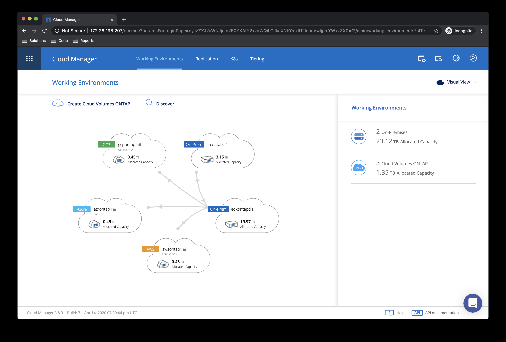
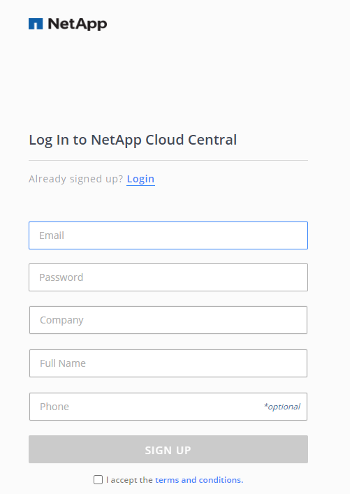
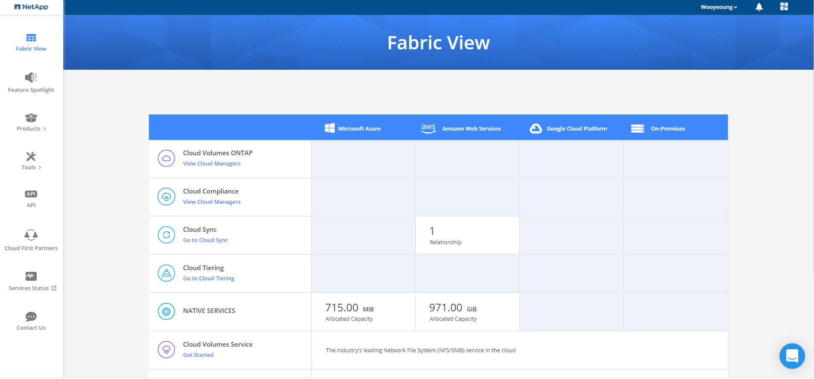

Netapp의 Cloud volume ontap 서비스를 구축 밎 사용해봄으로서 느꼈던점등을 리뷰하고자 합니다.
CVO는 스토리지로 유명한 Netapp 에서 출시한 제품으로 운용 및 관리의 편의성에 주요 초점이 맞춰저 있는것이 느껴졌습니다.
Netapp CVO 소개
Netapp Ontap 제품군을 통해 그 데이터가 어디에 어떤형식으로 보관되어 있든 엑세스 및 관리를 일원화 할 수 있습니다.
IDC나 서버에 있는 파일 시스템 기반 데이터와 오브젝트나 블록기반에 스토리지에 분산되어 저장되어 있더라도 Ontap 제품군을 통해 migration 및 동기화 백업등이 가능하며 데이터관리자가 각기 필요로 하는 곳에 데이터 제공하는 작업이 매우 간결해집니다.

만약 사내에 여러 프로젝트가 진행되고 있고 자신은 각 프로젝트에 저장조 제공 및 데이터관리를 수행하여야 한다고 생각해봅시다.
프로젝트마다 개발 및 운영환경 요구사항도 각기다릅니다. AWS에서 Azure에서 IDC에 구성되어 있는 k8s 환경에서 스토리지 관리자에게 요청이 쏟아집니다.
혼자 수행하게 된다면 저는 계정정보와 엑세스 정보 하루가 지날것 같습니다. CVO를 사용하신다면 Cloudmanager 콘솔에서 보다 쉽게 수행이 가능합니다.
Netapp Cloud 계정 생성하기
https://cloud.netapp.com/ontap-cloud
위 사이트에서 이메일 인증만 하시면 쉽게 회원가입이 가능합니다. 
웹콘솔 우측 상단 Fabric View에서 해당 계정과 연계된 Netapp 제품들을 확인 할 수 있습니다.

이어지는 다음 포스팅에서 Netapp CVO 아키텍쳐와 AWS-Azure 네트워크 구성에 대해 알아보겠습니다.